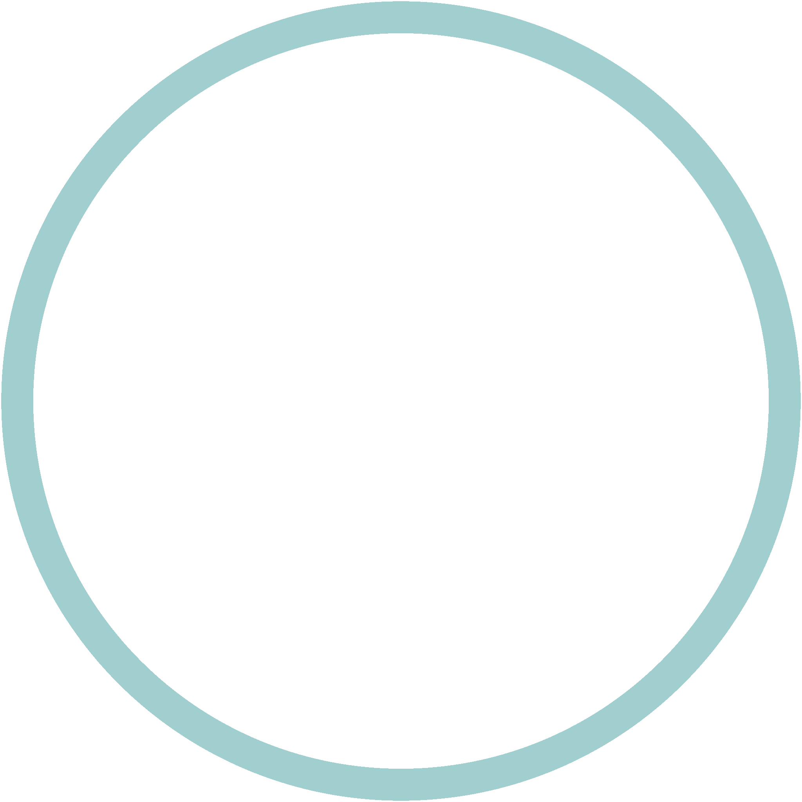
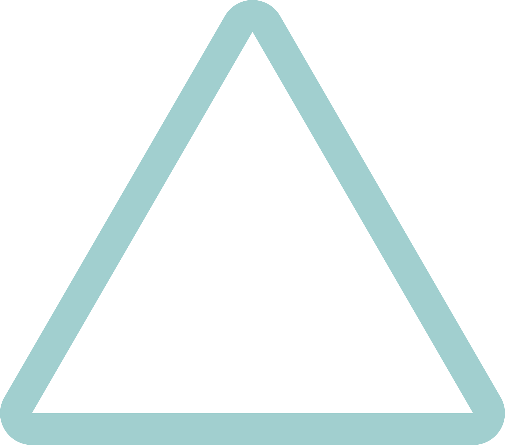
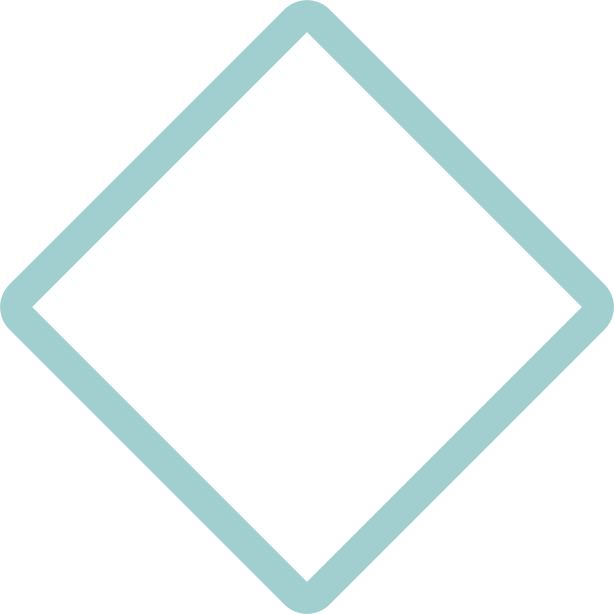
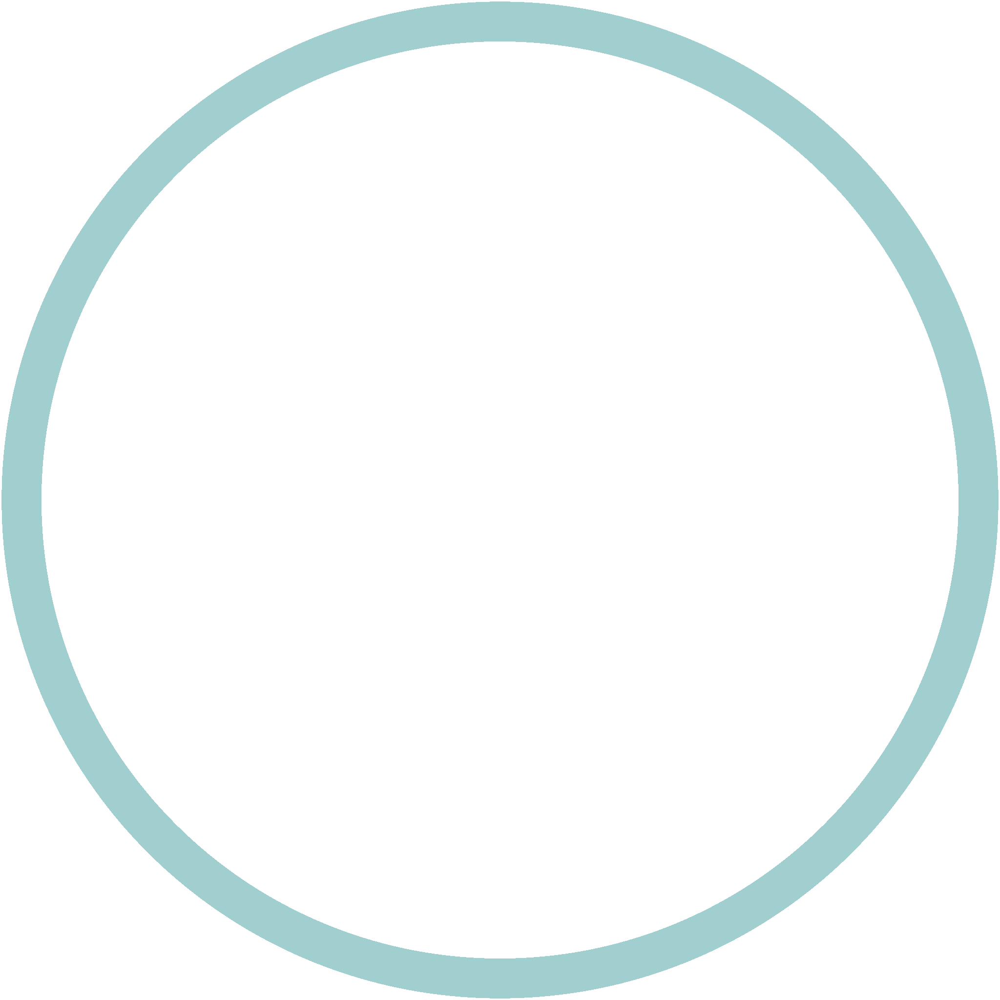
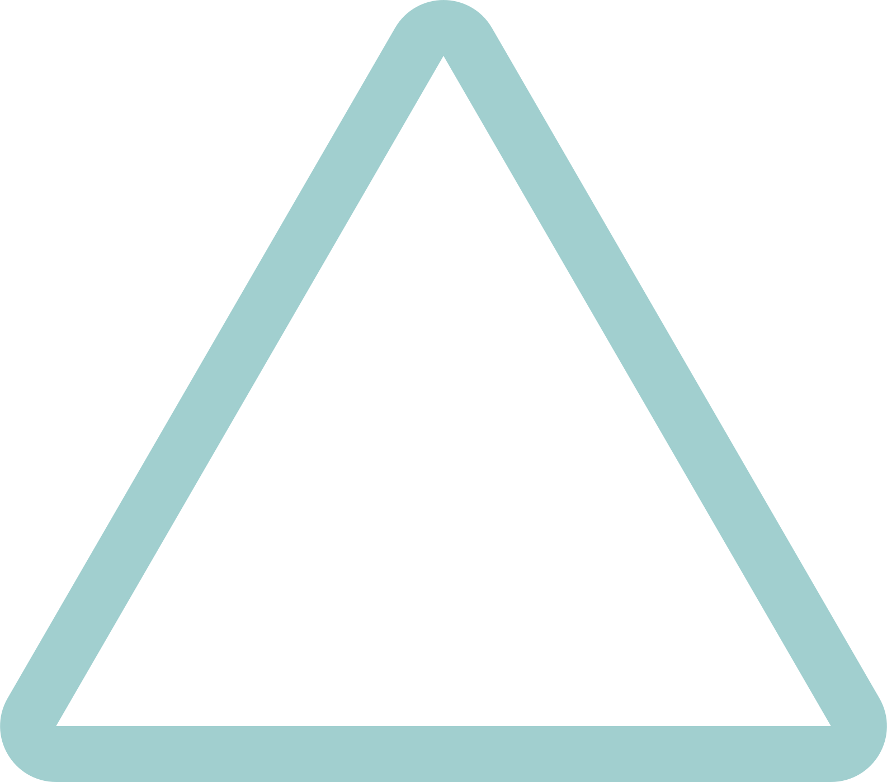
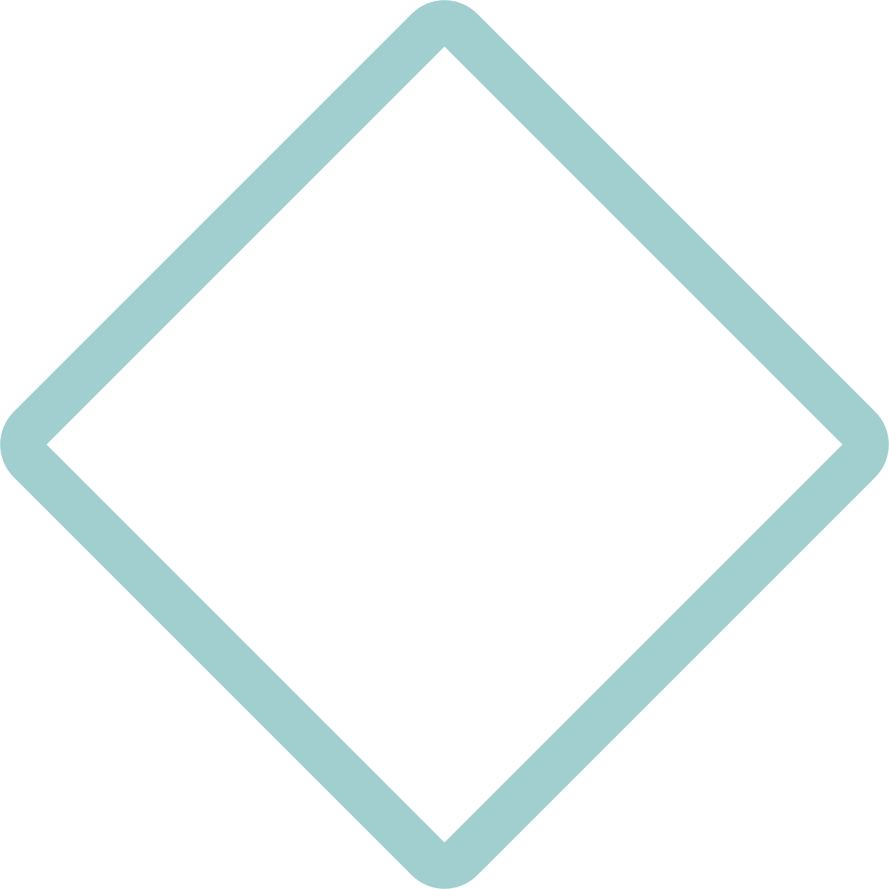

As someone who dreads having to think of meal ideas, I created KitchenCompanion Customizable Cookbook to aid users in finding countless recipe ideas based on ingredients on-hand and helps them decide "What am I going to make for dinner tonight?"
Tech Specs
Challenges
Successes
Front end: React, JavaScript, Ant Design, SASS, Axios, Winwheel.js
Back end: Node.js, Express, MySQL, Spoonacular API, Knex, CORS, Axios, React Router
KitchenCompanion uses the Spoonacular API to retrieve and display thousands of different recipes and allows users to sort/filter them according to different search criteria. This includes being able to filter recipes based on ingredients that the user has on hand, which is saved in the application's state, as well as a random selector wheel that chooses a recipe randomly for easy meal decisions.
The application also uses a number of Ant Design components for a smooth user experience.
I initially explored several different recipe APIs to find the functionality I wanted. After selecting one, I ended up having to make a change halfway through the project due to a lack of one category of information I needed.
The Dinner Wheel was easy to build with Winwheel.js, but manipulating the funcionality proved to be difficult. I was able to modify the dependency package to get the results I wanted after many hours of scouring Stack Overflow.
With only two weeks to get a working product, I was amazed at what I could build in such a short amount of time. Despite all the moving parts and discovering what I could and could not complete in the given timeframe, I am so proud to have integrated all the moving parts well and deliver an application so full of good functionality.
Despite my ability to customize the functionality of Winwheel.js, I also had trouble maintaining it after deploying the application. However, this opened me to the experience of modifying the dependency, saving it to my GitHub and using my own dependency in the project - something I would not have had to experiment with otherwise.


 




